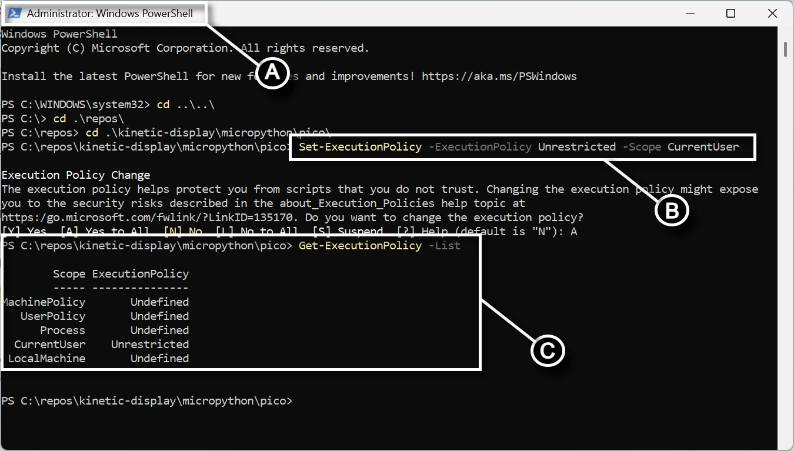

Software and Microcontroller Preparation¶
Prerequisites¶
Read and bookmark the instructions to install Micropython onto your Raspberry Pi Pico.
- Install Visual Studio Code
- With VS Code installed and open, click on the extensions icon on the Activity bar and install the following extensions from Marketplace:
- Python by Microsoft
- MicroPico by paulober
- Download the flash_nuke Uf2 file
- Clear your Raspberry Pi Pico before flashing a new build:
- Plug a USB cable into your Raspberry Pi Pico's USB port
- Press and hold the BOOTSEL button on your Raspberry Pi Pico while plugging your USB cable into your computer
- Verify an RPI-RP2 storage device appears
- Drag and drop the flash_nuke.uf2 file into the RPI-RP2 storage
- Download the micropython Uf2 file for the Raspberry Pi Pico and Raspberry Pi PicoW
Verify Micropython on your Raspberry Pi Pico¶
- Open Visual Studio Code
- On the top menu select the (A) elipse ... (if present), then (B) Terminal->New Terminal.

- In the terminal pane, select the terminal menu (A) followed by the MicroPico vREPL sub-menu (B)

- Plug your Raspberry Pi Pico into the USB port and the (A) Status bar will show your Pico as connected

- Verify your Pico's onboard LED turns on and off by typing the following code in the (B) Terminal pane (screen capture above) and copy/paste each line separately:
from machine import Pin
p = Pin(25,Pin.OUT)
p.on()
p.off()
Fork and Clone the Repository¶
- Install Git
- Open a browser and follow the link to the Kinetic-Display repository
- Create a fork of the Kinetic-Display repository.
- Open a new PowerShell terminal by clicking on the windows icon in the bottom task bar and searching for "Windows PowerShell", then run the application. See (A) in the screen shot below. 
- Change the directory to
kinetic-display\micropython\picoin your cloned fork, see (B) in the previous screen shot. -
Run the command
./deploy.ps1 <directorypath>, for example./deploy.ps1 "c:\deploy". See (A) in the screen shot below. For example,
Warning
The folder you provide for <directorypath> will be deleted as well as all its contents when you run this command. Be sure to save or rename the folder if you want to preserve any changes you made.
You'll get the following example output when successful, see (B) in the previous screen shot. Verify the conductor and digit folders exist under the folder you provided in the parameter for the ./deploy.ps1. This is the code you'll use to load onto your Raspberry Pi 2040 Picos and PicoW.
Directory: C:\deploy
Mode LastWriteTime Length Name
---- ------------- ------ ----
d----- 1/31/2025 8:30 PM conductor
d----- 1/31/2025 8:30 PM digit